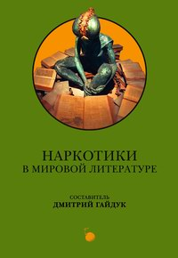

Дмитрий Гайдук (составитель) • Наркотики в мировой литературе • энциклопедии • 12.01.2006 (анонс, не опубликована)

Современные представления о наркотиках во многом является порождением художественной литературы и унаследовавших её багаж новейших искусств — кинематографа и телевидения. Литераторы всех времён и народов отчасти ответственны и за ту сложную обстановку, которая сложилась в настоящее время вокруг наркотических и психотропных препаратов. С древнейших времён распаляя фантазию своих слушателей сказками о «волшебных зельях», они создали миф о Наркотиках, благодаря которому эти препараты вышли за пределы узкоспециального обихода и сделались общественно-культурным явлением, а затем и социальной проблемой. Сквозь призму этого мифа сегодня воспринимают наркотики все те, кто черпает сведения о них из беллетристики и средств массовой коммуникации — то есть, подавляющее большинство современных людей. В антологию вошли тщательно отобранные составителем тексты, представляющие всю историю мировой литературы.
Книга так и не вышла. По тем же самым соображениям, что остановили публикацию остальных книг «про наркотики»: угроза лишиться тиража и денег. Хотя и мировая литература.
Оглавление
Предисловие
Часть I. Психоделическое причастие
Раздел 1. Наркотические и психотропные вещества в культовой практике народов мира — Аяхуаска (аяуаска, васка, яхе, яге, яже, натема и др.) — Происхождение аяхуаски — Приготовление и употребление аяхуаски у индейцев амавака — С. Кальво, «Три Половины Ино Моксо», 1981 — Vinum Sabbati («ведовское зелье», «летательная мазь») — Vinum sabbatum и полёт на шабаш — А. С. Пушкин, «Гусар», 1833 — А. Мейчен. «Бэйсуотерский отшельник» (1895) — О составе «летательной мази» (современная реконструкция) — Киаран Карсон. Чай из трилистника (2000) — Конопля (бханг, бандж, гашиш, марихуана) — Конопля в скифском погребальном ритуале — Геродот. История (V в. до н. э.) — Легенда об ассассинах — Марко Поло. Книга о разнообразии мира (1298) — Жозеф-Франсуа Мишо. История Крестовых походов (1809) — А. Дюма. Граф Монте-Кристо (1844) — Ш. Бодлер. Поэма гашиша (1858) — Т. Маккена. Пища богов (1992) — Мандрагора (моли, яду’а, альрауне) — Легенды о мандрагоре — Х. Л. Борхес. Книга вымышленных существ (1974) — Мухомор — Мухоморы в шаманских практиках Сибири и Крайнего Севера — Мирча Элиаде. Шаманизм и древние техники экстаза (1951) — «Мухоморное пьянство» у чукчей и коряков — В. Г. Богораз-Тан. Материальная культура чукчей (1930) — Пейот (пейотль) — Происхождение пейота — Легенда индейцев уичолей — Церемония сбора пейота — Пейот и христианство — Олдос Хаксли. Двери восприятия (1954) — Сома — Гимны к Соме. Ригведа (X в. до н. э.) — Хаома — Авеста. Младшая Ясна (ок. VI в. до н. э.) — Хаома в современной культовой практике — Л. А. Лелеков. Зороастризм: явление и проблемы (1991) — Раздел 2. «Психоделическое причастие» в европейской фантастике — Олдос Хаксли. О дивный новый мир (1932) — Эдмунд Гамильтон. Чужая земля (1949)
Часть II. Волшебный помощник
Раздел 1. Волшебные снадобья в фольклоре — «Сильная вода» — Медведко, Усыня, Горыня и Дугиня богатыри — Иван-Простак — Приключения Таро в стране гор — Быстрые ноги — Ночное зрение — Прозрение скрытого — Язык зверей и птиц — Раздел 2. Волшебные снадобья в художественной литературе — Пу Сун-лин. Укротитель Ма Цзе-фу (ок. 1700 г.) — Томас Де Квинси. Исповедь англичанина, любителя опиума (1822) — Томас Майн Рид. Охотники за растениями (1860) — Артур Конан-Дойл. Знак четырех (1890) — Герберт Уэллс. Новейший ускоритель (1902) — Клод Фаррер. Страх господина Фьерсе (1904) — Алистер Кроули. Кокаин (1917) — Джон Стейнбек. На восток от Эдема (1951) — Уильям С. Берроуз. Джанки. Исповедь неисправимого наркомана (1953)
Часть III. Преображение и превращение
О том, как Ча превратился в дракона — Может, царевну в дом приведёшь? — Смола — Гомер. Одиссея (VII в. до н. э.) — Луций Апулей. Метаморфозы, или Золотой осел (II в. н. э.) — Вильгельм Гауф. Калиф-аист (1826) — Льюис Кэрролл. Приключения Алисы в стране чудес (1865) — Роберт Льюис Стивенсон. Странная история доктора Джекила и мистера Хайда (1886) — Герберт Уэллс. История покойного мистера Элвешема (1897) — Клод Фаррер. Две души Рудольфа Гафнера (1904) — Михаил Афанасьевич Булгаков. Мастер и Маргарита (1940)
Часть IV. Временная смерть
Луций Апулей. Метаморфозы, или Золотой осел (II в. н. э.) — Чжуншаньское тысячедневное вино — Гань Бао. Записки о поисках духов» (IV в. н. э.) — Ван Чжун (XIII в.) — Пу Сун-лин. Переодетый цзиньлинец (XVIII в.) — Кретьен де Труа. Клижес (1176) — Джованни Боккаччо. Декамерон (ок. 1350) — Уильям Шекспир. Ромео и Джульетта (1597) — Лайонелл Фрэнк Баум. Удивительный волшебник из страны Оз (1900) — Артур Конан Дойль. Отравленный пояс (1913)
Часть V. Похититель разума
Раздел 1. «Добровольные безумцы» — Четверо братьев — О человеке, который курил гашиш и человеке, который выращивал коноплю — Тысяча и одна ночь (XII–XVI вв.) — Шарль Бодлер. Поэма гашиша (1858) — Эрнест Хемингуэй. Праздник, который всегда с тобой (1964) — Раздел 2. «Опоенные и одурманенные» — Тысяча и одна ночь (XII–XVI вв.) — Уилки Коллинз. Лунный камень (1868) — Болеслав Прус. Форпост (1885) — О. Генри. В борьбе с морфием (1911) — Владимир Жаботинский. Самсон Назорей (1916) — Андре Жид. Тесей (1943) — Раздел 3. «Утраченная память» — Миф о лотофагах в изложении Гомера (VII в. до н. э.) — Альфред Теннисон. Вкушающие лотос (1832) — Лорд Дансени. Гигантский Мак (1915) — Дурман-трава Часть VI. Ложная реальность
Кретьен де Труа. Клижес (1176) — Тысяча и одна ночь. Рассказ о любителе хашиша, ночи 142–143 (XII–XVI вв.) — Томас Мэлори. Смерть Артура (1470) — Александр Дюма. Граф Монте-Кристо (1844) — Эжен Сю. Агасфер (1845) — Николай Васильевич Гоголь. Невский проспект (1835) — Шарль Бодлер. Поэма гашиша (1858) — Николай Степанович Гумилев. Путешествие в страну эфира (1922) — Ивлин Во. Испытание Гилберта Пинфолда (1957)
Часть VII. Двери восприятия
Самюэль Тейлор Кольридж. Кубла Хан, или Видение во сне (1797–1816) — Хорхе Луис Борхес. Сон Кольриджа — Томас Де Квинси. Исповедь англичанина, любителя опиума (1822) — Эдгар Аллан По. В смерти — жизнь (1842) — Шарлотта Бронте. Городок (1853) — Шарль де Костер. Легенда об Уленшпигеле (1867) — Клод Фаррер. Фэ Ци Лунг (1904) — Говард Филипс Лавкрафт. Хаос наступающий (1920) — Герман Гессе. Степной волк (1928) — Лео Перуц. Снег святого Петра (1933)
Часть VIII. Роковая страсть
Томас Де Квинси. Исповедь англичанина, любителя опиума (1822) — Алистер Кроули. Дневник наркомана (1922) — Михаил Афанасьевич Булгаков. Морфий (1926) — Михаил Агеев. Роман с кокаином (1934)
Часть IX. Пагубное зелье
Шарль Бодлер. Поэма гашиша (1858) — Чарльз Диккенс. Тайна Эдвина Друда (1870) — Лев Николаевич Толстой. Анна Каренина (1873–1877) — Редьярд Киплинг. Ворота Ста Печалей (1888) — Лао Шэ. Записки о Кошачьем городе (1932) — Олдос Хаксли. О дивный новый мир (1932) — Николай Шпанов. Домик у пролива (1957) — Жан Веркор. Сильва (1961)
Часть X. Эликсир Сатаны
Раздел 1. «Запретный плод» — Эрнст Теодор Амадей Гофман. Эликсиры Сатаны (1816) — Эдвард Джордж Бульвер-Литтон. Занони (1842) — Раздел 2. Запрещённое вещество. «Чума XX века» в детективной и бытовой прозе — Дэшиел Хэммет. Золотая подкова (1924) — Агата Кристи. Загадка Эндхауза (1932) — Агата Кристи. Почему же не Эванс? (1934) — Питер Чейни. Сети дьявола (1934) — Рекс Стаут. Лига перепуганных мужчин (1935) — Питер Чейни. Этот человек опасен (1936) — Джеймс Хэдли Чейз. Теперь это ему ни к чему (1939) — Агата Кристи. Зло под солнцем (1941) — Р. Чандлер. Прощай, моя красотка (1940) — Рекс Стаут. Через мой труп (1940) — Микки Спиллейн. Я сам вершу свой суд (1947) — Жорж Сименон. Мегрэ и коронер (1949) — Микки Спиллейн. Целуй меня страстно (1952) — Джеймс Хедли Чейз. Миссия в Венецию (1954) — Джеймс Хедли Чейз. Вне дома (1954) — Агата Кристи. Хикори-дикори-док (1955) — Эд Макбейн. Убийца полицейских (1956) — Уильям С. Берроуз. Джанки. Исповедь неисправимого наркомана (1953)
Авторы и произведения
Библиография
👽